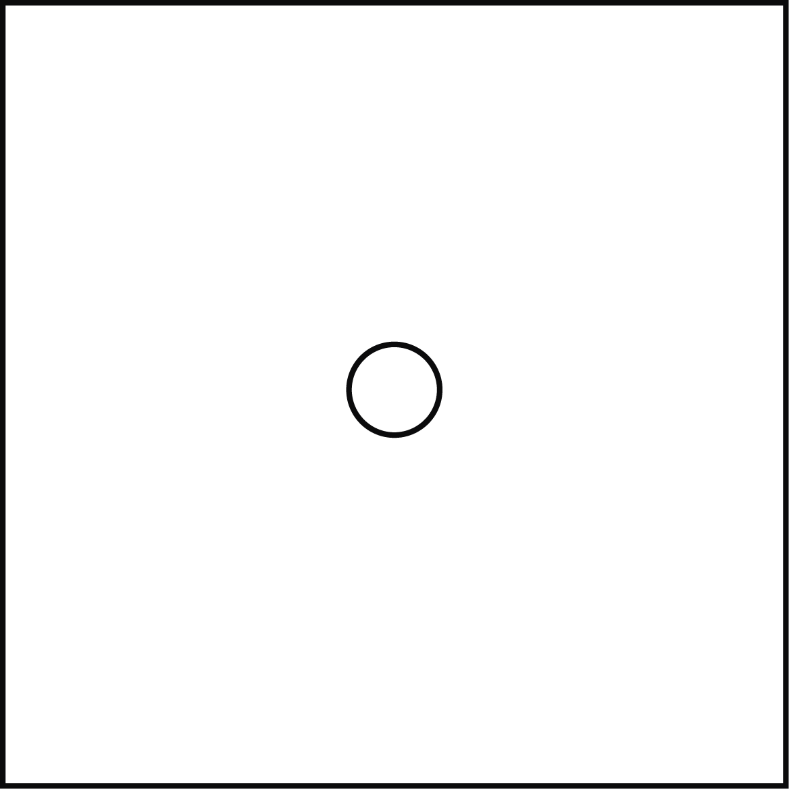

1000 A.D.
The pinhole camera or Camera Obscura was basically a dark box with a small hole punctured in the front of the box, allowing a finite amount of light in, which projected an image upside down onto the back of the box.
1837
Louis Daguerre invented the Daguerreotype, capturing the first permanent photograph. Light entered the lens of the Daguerreotype camera and the image was captured on a silvered copper plate that was then treated with mercury vapor, iodine and bromine. Because of this process, only professionals operated Daguerreotype cameras. Daguerreotypes were most often of portraits and because they were expensive, only the wealthy could afford to have their photos taken (“What is a Daguerreotype?”).
1888
George Eastman made photography accessible to millions of amateurs, without professional training or expertise, with the invention of his Kodak #1 camera. The Kodak camera was a simple box camera that was pre-loaded with a 100-exposure roll of film. When the roll was finished, the entire camera was sent to a factory, where it was reloaded with film and returned to the customer to continue to use while the first roll was processed (Fineman).
1947
Invented by Edwin Land, the Polaroid camera provided instant gratification, as the photograph was developed and printed from the camera right after the photo was taken (“The History of the Camera”). Before the invention of the digital camera and LCD screen, the Polaroid was the first camera that allowed the photographer to view the image instantaneously.
1975
The first digital camera was invented by Kodak engineer, Steven Sasson. It was very large and heavy and black and white photos were recorded on a digital cassette tape. The resolution was 0.1 megapixels and it took 23 seconds to record the first digital photograph. Before this development, photos had been recorded on film, but now they could be recorded digitally, synonymous with the emergence of the digital age. Although this digital camera was a major advancement in technology, it was impractical and unavailable to the general public (Trenholm).
1995
The Casio QV-10 housed the first LCD screen on the back. The screen only measured 1.8 inches from corner to corner, but this advancement allowed the photographer to instantly view the photograph, and cameras began to look more like what we are used to today.